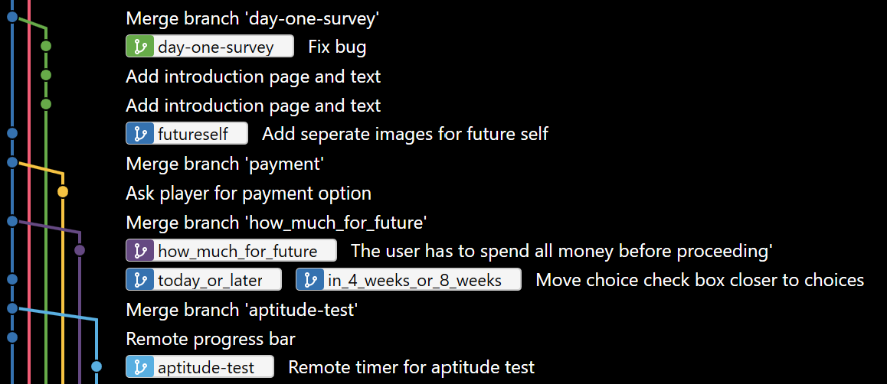

Introduction to Version Control/Git
Yi Wang
Created: 2020-07-01 Wed 23:28
1 Why Version Control?
1.1 The meme

1.2 Current situation
Research nowadays
- involves hundreds of iterations before publication,
- spans months or years, and
- has many collaboraters.
1.3 Problem
Given the situation, it is extremly hard, it not impossible, to achieve the following:
- *Traceability - know how the document/project evolved over time.
- *Identifiability - track what changed by whom at when and why.
- *Clarity - multiple versions of documents can be distinguished.
- *Duplicate reduction - out-of-date and misleading copies can be safely destroyed, leaving definitive versions only.
- *Error reduction - users are less likely to access confilict document versions.
- Accident prevention - make it impossible for users to destroy a project/file.
(* Taken from: Leicester University.)
1.4 Solution
Incidentally, modern Version Control checks all those points.
[X]Traceability[X]Identifiability[X]Clarity[X]Duplicate reduction[X]Error reduction[X]Accident prevention
2 Why do we want to use Git?
- De-facto software for version control
- A lot of good tutorials online
- Easy to learn (maybe)
- Free, widely used collaboration service - GitHub
2.1 Side note
Git - command line based tool. SourceTree - graphical tool based on Git.
3 Incremental versioning
Manual version control by renaming a file is not optimal because
- hard to distinguish unrelated changes
- hard to attach a meaning to a rename
In paper.tex, we changed the title at line number 1.
Introduction to Git
=>
Introduction to Version Control
- Incremental versioning: Line number 1 in
paper.texhas been changed from Introduction to Git to Introduction to Version Control. - Renaming:
paper.texis renamed to something likepaper-change-title.tex.
Git tracks all your incremental changes and automagically applies those changes to your files in a chronological order.
This is the core idea of Git and it has some amazing effects.
/---\
|c 1| This is one change.
\---/
/---\ /---\ /---\ /---\ /---\ /---\
|c 1|->|c 2|->|c 3|->|c 4|->...|c98|->|c99|
\---/ \---/ \---/ \---/ \---/ \---/
Time line
------------------------------>
3.1 Clean layout - always
Instead of this

- With Git, your project structure is always clean like below.
- You always work on the latest version of the files.

3.2 Have as many versions as you want
In fact, Git encourages you to break your changes into small coherent chunks as incremental versions.
Each line below can be considred as a version.

4 Understand your work
With Git, you understand how your
- paper
- code
- data
evolve over time in retrospect.
5 Full cooperation history
Know who changed what at when & why - line by line.

6 Time travel to any version
Time travel to previous versions with zero damage to current work.
7 Work on new ideas - no worries
Experiment with new ideas in place with zero commitment.
7.1 stash all your temporary work
- New idea hits whenever it pleases.
- It hits hard especially when you are in the middle of something.
git stashsaves all your current progress from the last commit.- Then you can start working on the new ideas.
7.2 Getting back your work
- When you finished with your new ideas.
git stash popto get back to where you left.
8 A branch for a sub-project
Change code for your conference slides with zero damage to your main paper code.

9 Bring sub-projects up to speed with one command
Update your conference slides to use the newest changes in main paper, with zero manual check-copy-paste.
/-\ /-\ /-\ /-\
|c|->|c|->|c|->|c| master branch (main paper)
\-/ \-/ \-/ \-/
|
| /---\ /---\
+-->|cb |->|cb | conference branch
\---/ \---/
/-\ /-\ /-\ /-\ /-------------\ /-------------\
|c|->|c|->|c|->|c|->|updated data |->|updated code | master branch (main paper)
\-/ \-/ \-/ \-/ \-------------/ \-------------/
|
| /---\ /---\
+-->|cb |->|cb | conference branch
\---/ \---/
/-\ /-\ /-\ /-\ /-------------\ /-------------\
|c|->|c|->|c|->|c|->|updated data |->|updated code | master branch (main paper)
\-/ \-/ \-/ \-/ \-------------/ \-------------/
|
| /---\ /---\
+-->|cb |->|cb | conference branch
\---/ \---/
10 Collaborate like never before
This is an advanced option and requires everyone in the team to use Git.